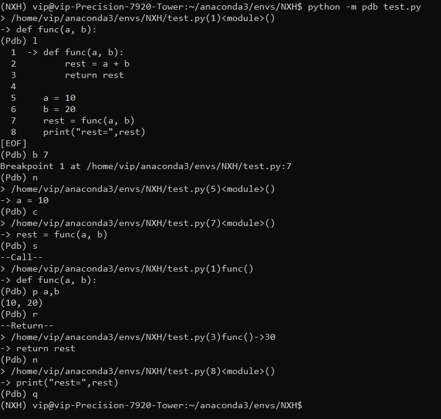

【转载】如何在终端进行debug调试
R&D
MOT, python
字数统计: 151(字)
阅读时长: 1(分)
参考这个方法
进入Debug模式
命令列表
l —> list 显示当前代码
n —> next 向下执行一行代码
c —> continue 继续执行代码
b —> break 添加断点
clear —> 清除断点
s —> step 进入一个函数
p —> print 打印一个变量的值
a —> args 打印所有的形参语句
q —> quit 退出调试
r —> return 快速执行到函数的最后一行
实例
1
2
3
4
5
6
7
8
| def func(a, b):
rest = a + b
return rest
a = 10
b = 20
rest = func(a, b)
print("rest=",rest)
|
实例效果

以后终端调试可能会用上
本文链接 : https://github.com/Nxhhhh/Nxhhhh.github.io/2024/05/17/debug/
This article is available under Attribution-NonCommercial-ShareAlike 4.0 International (CC BY-NC-SA 4.0) License